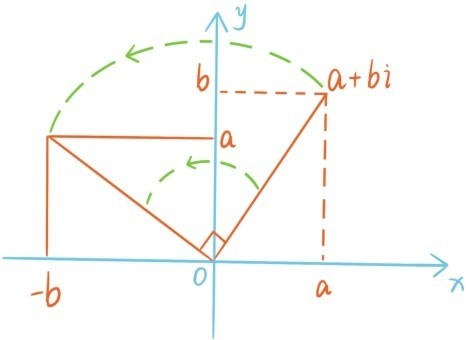
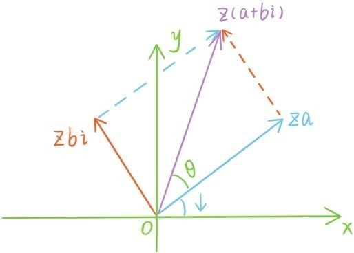

比起复数加法，复数乘法要复杂多了，但其实都可以由公式i2=-1和乘法交换律，分配律推导得出，比如
i·(2-i)=1+2i;
i·(1+i)=-1+i;
(1+i)2=1+2i+i2=2i。
一般的复数乘法公式是
(a+bi)(c+di)=ac-bd+(ad+bc)i。
上一节讲过，所有实数乘虚数i的效果可以看成是让整个x轴在坐标平面内逆时针旋转90°，那么所有复数乘i的效果呢？a+bi乘以i变成-b+ai，相当于是把点(a,b)变成(-b,a)：

所以所有复数乘i相当于是让整个平面绕原点逆时针旋转90°！
根据复数与坐标平面上的点的对应关系，所有复数乘正实数a代表整个平面保持原点不动的均匀伸缩变换(x,y)→(ax,ay)；所有复数乘以-1，就是把a+bi变成-a-bi，相当于是把坐标点(x,y)，变成(-x,-y)，这不仅仅是让数轴旋转180°，更是让整个平面绕原点旋转180°；而所有复数乘以i相当于是让整个平面逆时针旋转90°。现在我们很想知道所有复数z同时乘上一个一般的复数a+bi的效果是什么？令z的幅角是ψ，并先假设a和b都是正数（其他情况也可以类似说明）。这时这个乘积
z(a+bi)=za+zbi
是两个复数za，zbi的和，第一个复数代表z伸缩a倍，第二个复数代表z伸缩b倍后再逆时针旋转90°。

根据勾股定理，乘积z(a+bi)的模等于。
而从上图可以看出乘积z(a+bi)的幅角等于z与a+bi的幅角之和ψ+θ，所以：
（复数乘法的几何意义）设非零复数a+bi的模为r，幅角为θ，那么所有复数z乘上a+bi相当于让整个平面绕原点逆时针旋转θ，并均匀伸缩r倍。
根据三角函数的定义，模为r幅角为θ的复数是r(cosθ+sinθi)，这种表达式称为复数的三角形式，而a+bi称为复数的坐标形式。根据复数乘法的几何意义，两个这样的复数乘积是
比较等式两边的实部和虚部，就得到三角函数的两个基本公式
对于任何非零复数z=r(cosθ+sinθi)，
满足z·z'=1，称z'为z的倒数。
提问时间
8.2.1 计算(1-3i)(1+4i)与(-2+i)2。
8.2.2 计算和(1-i)9。（提示：利用复数的三角形式）
8.2.3 证明两个二倍角公式
cos2θ=cos2θ-sin2θ
sin2θ=2sinθcosθ
8.2.4 求，。（提示：）